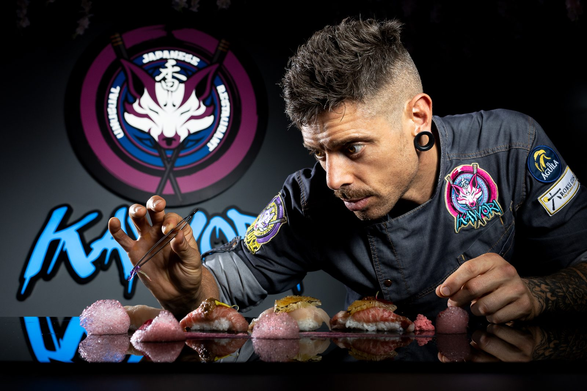
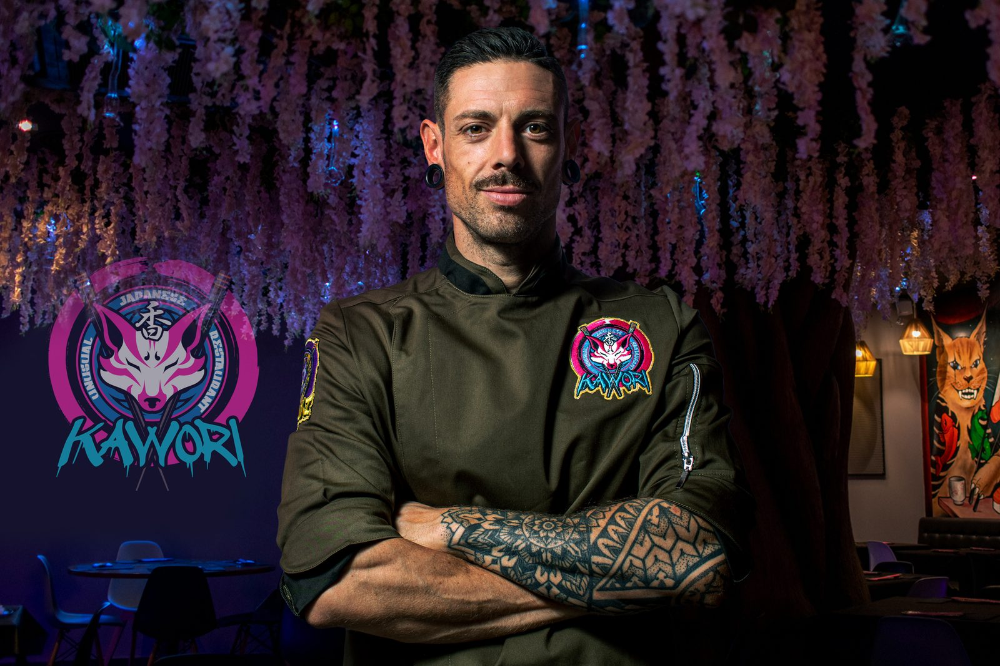

Sushi de vanguardia y guisos tradicionales japoneses de la mano del chef Alberto González. Una experiencia gastronómica que fusiona la tradición de Japón con sabores de todo el mundo.

Kawori nace de la visión del chef Alberto González, valenciano de sangre y japonés de corazón. Un restaurante donde se fusiona el sushi más vanguardista con los guisos más tradicionales de la cocina japonesa.
Respetando la técnica y la tradición de Japón, Alberto abre puertas a ingredientes y técnicas de todo el mundo, buscando el equilibrio de ingredientes en cada bocado.
Kawori se divide en dos salas, cada una con su propia personalidad pero con el mismo concepto de experiencia gastronómica de la mano del chef Alberto González y todo su equipo.
Respetando la técnica y la tradición de Japón, abriendo puertas a ingredientes y técnicas de todo el mundo.
Kawori cuenta con una valoracion de 4,7 sobre 5 en Google, con más de 2.700 opiniones de clientes.
Todos los platos que pedimos estaban espectaculares y los sabores eran exquisitos.
Todo muy muy rico. 5 estrellas sin duda.
Una delicia, la mezcla de sabores, productos muy frescos, amabilidad de los camareros. Buen ambiente.
Son exquisitos de sabor, en un mismo plato puedes encontrar distintos sabores y muy concentrados.
El carpaccio de vieira muy bueno y las croquetas de sepia espectaculares. Y el precio equilibrado.

En Kawori creemos en momentos únicos. Todo comienza con una conversación: queremos conocerte, descubrir que sabores te emocionan y saber si hay algo que debamos evitar por alergias o intolerancias.
Con esa información, nuestro equipo de sala, junto con los chefs, crea un menú personalizado, con platos de la carta y fuera de ella, pensado para que cada bocado sea una sorpresa a tu medida.
Kawori es un restaurante japonés de autor que fusiona sushi de vanguardia con guisos tradicionales japoneses. El chef Alberto González combina la técnica y tradición de Japón con ingredientes y técnicas de todo el mundo.
Es muy recomendable reservar, sobre todo para cenas de viernes y sábado. Puedes hacerlo a través del sistema de reservas online, por teléfono al 961 14 48 16 o por WhatsApp al 640 916 857.
Si. Kawori dispone de una carta vegetariana completa con selección vegetal organizada por secciones.
En el Carrer de Félix Pizcueta 13, 46004 Valencia, a 2 minutos andando de la estación de Xàtiva o Colón.
Si. Hay bonos regalo para una o dos personas, sin fecha de caducidad, validos cualquier día sujeto a disponibilidad de reserva.
De martes a sábado de 13:30 a 18:00 y de 20:30 a 01:00. Lunes y domingo cerrado.
En pleno corazón de Valencia, a 2 minutos de la estación de Xàtiva o Colón.